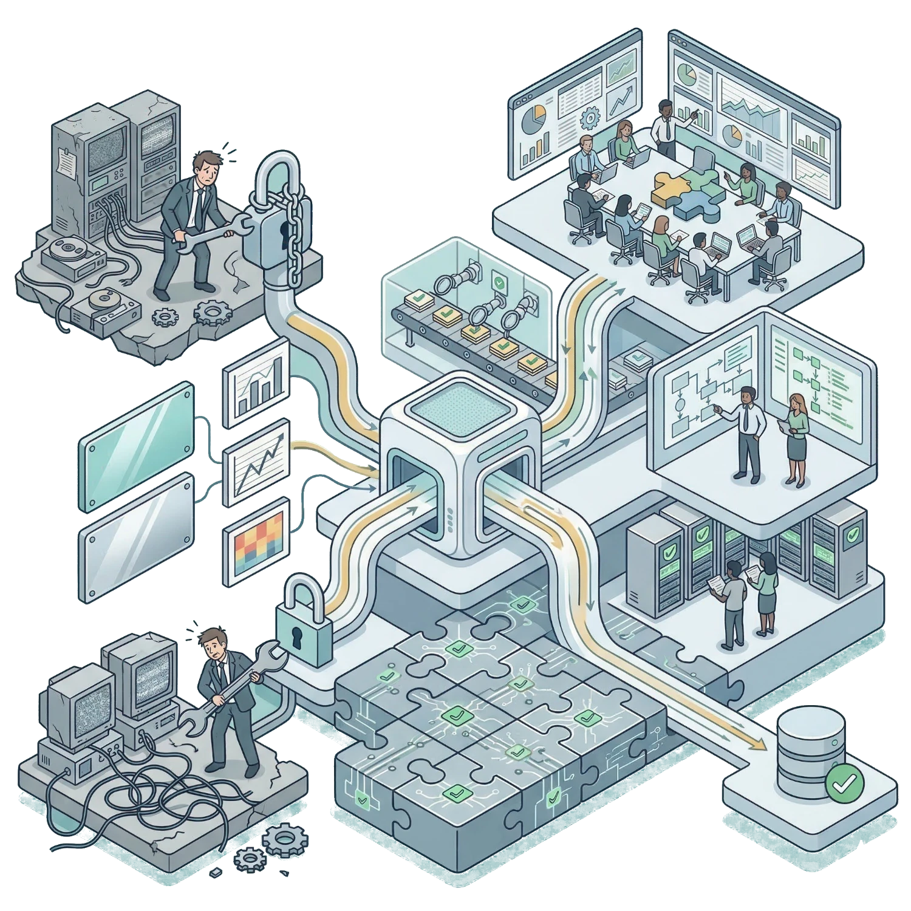
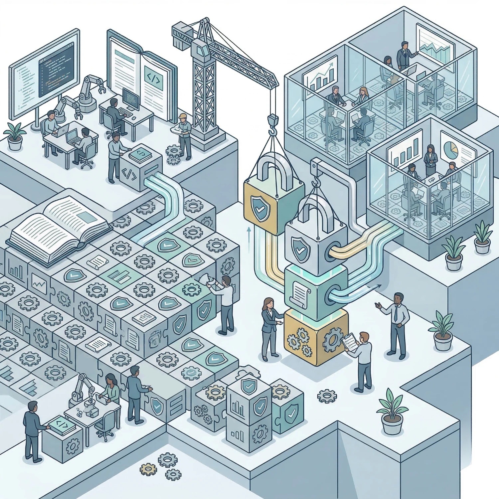
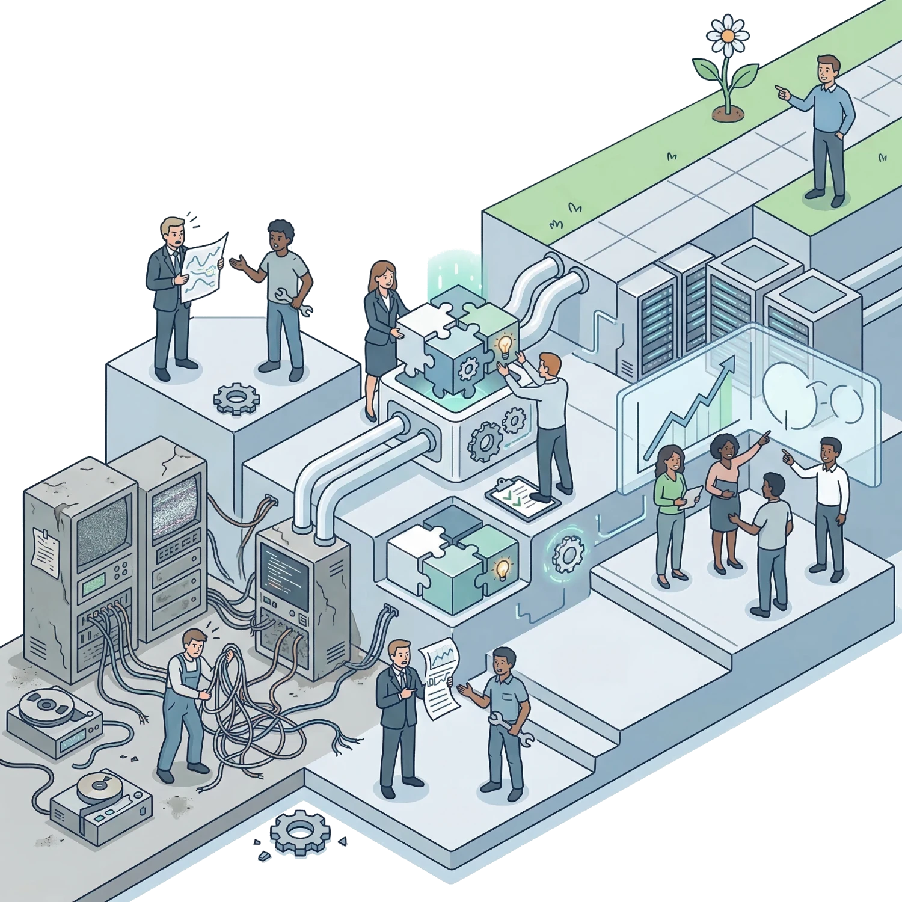

Coadun is a transformation service for Open Source-Enabled Statistical Computing Environments (SCEs). We help organizations unify SAS, existing systems, and open-source technologies (R, Python, Posit) into a single, governed operating model that's scalable and suited to both GxP and non-GxP workflows.
Delivered by experts from Achieve Intelligence and Jumping Rivers.
Tailored open source solutions without compromising compliance.
Operational integrity cannot be compromised, but compliance should not be a barrier to innovation. Many organizations today face similar challenges and a widening gap between their existing infrastructure and evolving analytical requirements:
Growing demand for R and Python capabilities that existing systems cannot support.
Inconsistencies from fragmented tools and siloed workflows across teams.
Difficulty reconciling traditional validation principles with R and Python packages.
Navigating resistance from users who don't want or cannot imagine change.
Uncertainty around adopting open source within regulated processes.
Balancing stakeholder expectations across business, operations, and user requirements.
Manual and tedious processes that cannot be automated in the existing system.
Understanding organisational usage to determine which components to migrate, maintain, or retire.
Schedule an introductory session with our team to review your current infrastructure and outline a structured migration plan.
Book an Introductory SessionDelivered collaboratively by Achieve Intelligence and Jumping Rivers, Coadun provides a structured step-by-step delivery plan and execution support for the lifecycle of your enterprise analytics environment, shaped to your organisation's requirements.
We assess your current state to ensure the delivery plan is grounded in reality, developing a clear migration roadmap aligned to your governance model.
We design an implementation plan for your enterprise SCE solution that factors in the user needs captured during discovery, existing IT requirements, and organisational workflows.
We deploy the SCE and bring the system live for pilot migrations, onboarding and system testing to ensure a robust, compliant environment.
The team behind Coadun brings together enterprise architecture, compliance strategy, SAS expertise, and open-source engineering into one coordinated delivery model. We provide the comprehensive skillset that organisations often lack internally when undertaking significant migrations.
The Challenge: Finding vendors that comprehend both legacy SAS requirements and the nuances of the modern open-source landscape.
The Coadun Approach: Teams and ways of working are harmonised under the new enterprise environment. Through the collaboration of Achieve Intelligence and Jumping Rivers, Coadun delivers both. We supplement internal knowledge gaps to guarantee a complete and robust migration, architecting a bridge between your existing systems and modern R/Python/Posit environments.

The Challenge: Uncertainty around adopting open source within highly regulated processes and maintaining end-to-end auditability.
The Coadun Approach: In regulated environments, open source must be stable and repeatable. We do not bolt compliance onto a finished platform. We implement a risk-based approach from day one that builds on your existing processes to streamline your transition to open-source.

The Challenge: Navigating cultural resistance to change and aligning divergent user expectations across the business.
The Coadun Approach: Infrastructure installation is not enterprise adoption. Enterprise architecture, compliance strategy, legacy migration, and user enablement are delivered as one accountable service. The true value of an SCE transformation is achieved when teams successfully adapt their workflows, not just the technology they use.
The Challenge: Balancing stakeholder expectations across business, operations, and technical constraints while retiring older tools.
The Coadun Approach: Infrastructure installation is not the same as enterprise adoption. We architect plans and solutions that integrate natively with your existing workflows rather than just delivering technology. A practical balance is found between competing business, technological, user, and validation requirements, paving the way for sustainable innovation.

Coadun is not a black-box platform; it is a structured service that delivers a harmonised, enterprise-grade analytics environment. Our approach is modular, allowing you to engage across the full lifecycle or select specific phases.
Delivering long-term support, incremental upgrades, and system updates.
Providing targeted upskilling and training for internal teams.
Developing, testing, and qualifying R or Python packages for GxP and non-GxP environments.
Managing the steady-state migration of legacy SAS code to R and Python at a sustainable pace.
Coadun is designed for:
We offer a fixed-scope introductory session to help you start your organisation's SCE transformation. This session allows you to: